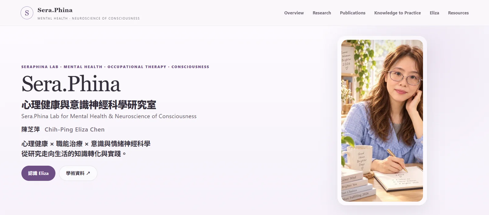
Sera.Phina｜Eliza
以心理健康職能治療為專業核心，連結教學研究、自我覺察、情緒調節與身心整合，整理 Eliza 的專業實踐與持續探索。
適合誰適合關注心理健康職能治療、自我覺察、情緒調節與身心整合的讀者。
AML × Sera.Phina｜協力夥伴
前往 Sera.Phina →
Sera.Phina 與 AML 是彼此獨立、相互協力的專業網站。兩者各自保有不同的主題與氣質，並在職能治療、心理健康、教育與生活實踐之間彼此交流、互相連結。
這裡不是網址大全，而是 Allen Mind Lab 依專業可信度、內容品質、公共價值與議題關聯性，持續整理的資源導航。先找到與你現在需求最接近的一區，再決定下一步。
彼此獨立、相互協力的專業網站，讓不同專業視角在 AML 之外繼續延伸。

以心理健康職能治療為專業核心，連結教學研究、自我覺察、情緒調節與身心整合，整理 Eliza 的專業實踐與持續探索。
Sera.Phina 與 AML 是彼此獨立、相互協力的專業網站。兩者各自保有不同的主題與氣質，並在職能治療、心理健康、教育與生活實踐之間彼此交流、互相連結。
從專業醫療資訊到日常身心實踐，提供健康促進與自我照顧的延伸入口。
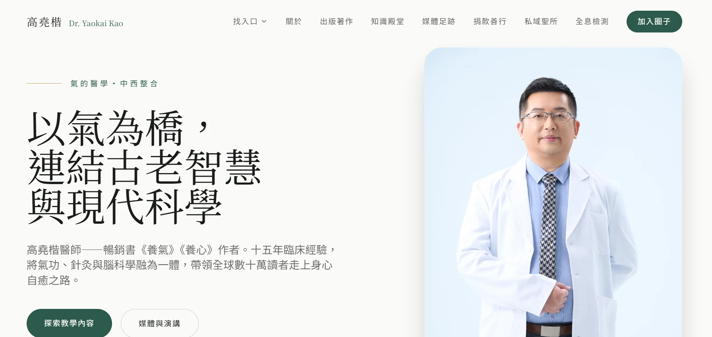
高堯楷醫師的個人專業網站，內容涵蓋中西整合醫學、身體調理指引、氣功養生、研究知識、出版著作與醫學研究新知。
與 AML 對身心整合、生活實踐與專業知識轉譯的關注高度相連，也提供持續更新的第一手專業內容。
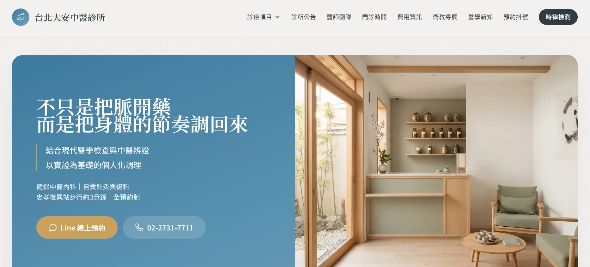
以中醫辨證結合現代醫學檢查與既有醫療資料，網站整理內科調理、疼痛與筋骨、睡眠與自律神經等診療與健康資訊。
網站資訊結構清楚，能補充 AML 在健康促進、身心調理與生活實踐面向的延伸閱讀，也與高堯楷醫師的臨床工作場域相互連結。
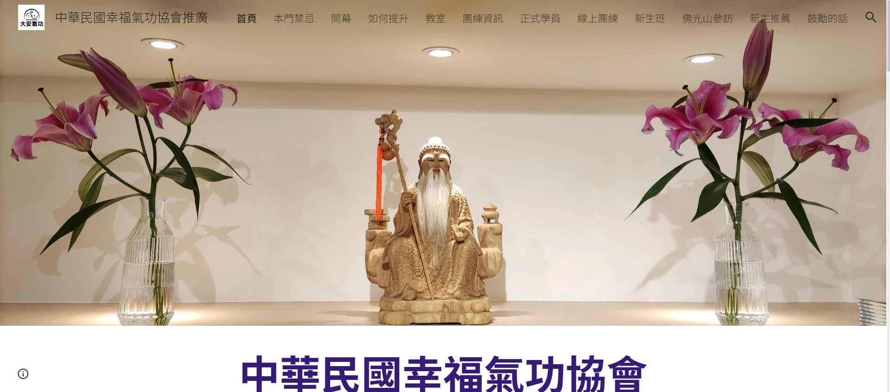
提供幸福氣功相關理念與大安地區推廣資訊，內容包含教室、團練、新生班與練習相關資料，作為認識氣功實踐與團體學習的延伸入口。
與 AML 對身心整合、日常實踐與自我覺察的探索相互呼應，提供對相關實踐有興趣的讀者進一步探索。
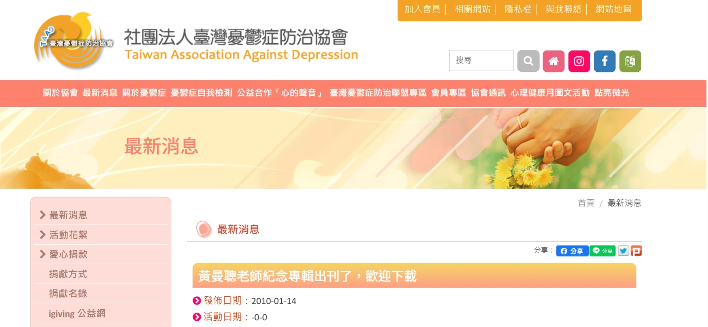
臺灣憂鬱症防治協會長期投入憂鬱症防治、心理健康教育與社會倡議；本連結亦保存「黃曼聰老師紀念專輯」相關內容，留下重要的專業與歷史記錄。
黃曼聰老師是 AML 的 OT 啟蒙老師之一，也是臺灣憂鬱症防治協會的發起人之一。她一生致力於職能治療專業與心理健康推廣，不遺餘力；協會所收錄的黃曼聰老師紀念專輯，也保留了這段值得被看見與延續的專業傳承，因此對 AML 具有深刻的專業、歷史與紀念價值。
聚焦教師、親師生與助人工作者可持續探索的教育、SEL 與系統合作資源。
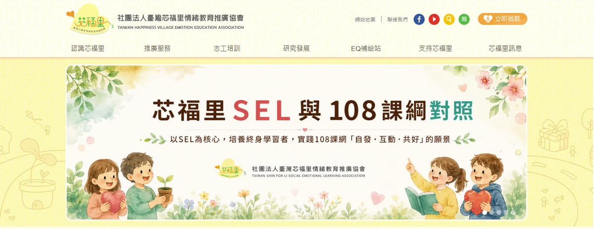
以社會情緒學習（SEL）與情緒教育為核心，推動親師生情緒教育、培訓與相關學習資源，提供理解情緒、互動與共好實踐的延伸入口。
與 AML 對教育、助人實務、心理健康與日常參與的關注相互呼應，也提供親師生進一步探索社會情緒學習與情緒教育的公共資源。
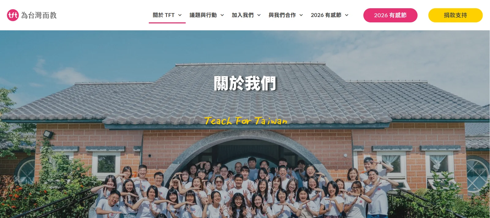
長期投入教育人才培育、教育現場協力與教育議題倡議，從第一線場域出發，持續探索教育不平等與系統改變的可能。
與 AML 對教育、教師專業、學習支持與系統合作的關注相互呼應。2026 有感節「如果這世界，老師消失了」也成為 AML 第 51 篇〈新世代教師的轉型與賦能〉的重要思考緣起。
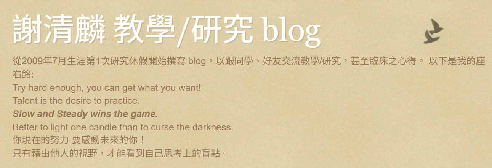
自 2009 年起持續書寫教學、研究與臨床心得，整理專業思考、學習歷程與實務反思，也保留了長期寫作所形成的知識脈絡與個人風格。
對 AML 而言，謝清麟老師是 AI 啟蒙的重要老師之一。這個 blog 不只是一個個人網站，更示範了如何透過長期書寫、知識整理與公開分享，把教學、研究與實務經驗轉化為可持續交流的學習資源，因此值得在 AML 中收錄。
當需求不只是閱讀，而需要正式服務窗口或家庭取向支持時，從這裡開始。
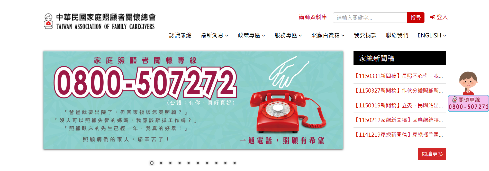
推動家庭照顧者權益與支持服務，提供照顧知能、支持資源、喘息服務資訊及家庭照顧者關懷專線（0800-507-272）。
家庭照顧者的心理健康、長期照顧壓力與支持需求，是 AML 關注的重要議題。家總長期投入照顧者支持及政策倡議，能協助讀者從知識閱讀延伸至實際可運用的求助與支持資源。
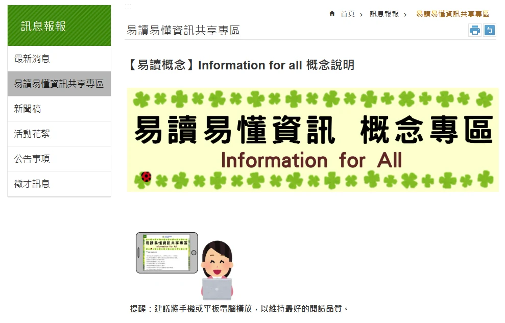
臺北市立陽明教養院自民國 104 年成立易讀小組，持續推動易讀易懂資訊，並將相關權益資料、訓練教材與實務成果公開分享，讓資訊更容易被理解與使用。
易讀易懂與數位無障礙都指向同一個核心：資訊不只要「有提供」，更要能被取得、理解與使用。這個共享專區保存了陽明教養院多年來的實務累積，也是 AML 思考資訊平權與普及性設計的重要延伸資源。
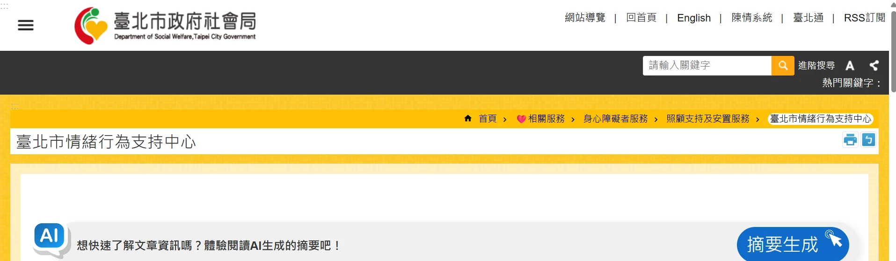
臺北市政府社會局官方資訊，提供情緒行為支持中心的服務內容、轉介資格、申請表件、受理方式與聯絡窗口。
當情緒行為支持需求超出一般家庭或服務現場可自行處理的範圍時，清楚找到正式服務與轉介窗口很重要。此官方頁面提供臺北市情緒行為支持中心的受理與申請資訊，作為需要進一步專業支持時的實務入口。
以 ADHD 家長與照顧者為主要對象，整理 ADHD 相關知識、親職支持與實務經驗，提供家庭在理解孩子、陪伴與日常應對上的延伸資源。
ADHD 的支持不只發生在治療場域，也與家庭理解、日常參與、同儕互動及成長歷程密切相關。此平台提供家長取向的延伸入口，與 AML 對兒童青少年支持、職能參與及家庭合作的關注相互呼應。
Allen Mind Lab 不追求大量收錄，而是持續整理與本站關注議題高度相關、內容品質穩定、具有公共價值的網站與專業資源。如果你知道值得長期追蹤的研究、工具、網站、公益平台或學習素材，也歡迎推薦給 AML。